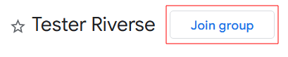

Ikuti langkah-langkah di bawah ini untuk menjadi penguji aplikasi dan mendapatkan versi terbaru sebelum dirilis ke publik.
Klik tombol di bawah ini untuk bergabung ke Google Groups penguji aplikasi. Pastikan kamu login menggunakan akun Google yang ingin dipakai di Google Play Store.
Join Now Buka Google Play Store di perangkatmu dan pastikan akun yang digunakan sama dengan akun yang sudah kamu daftarkan di Google Groups.
Klik tombol Unduh atau Perbarui untuk memasang versi uji aplikasi dari Google Play. Selamat, kamu sekarang menjadi penguji!